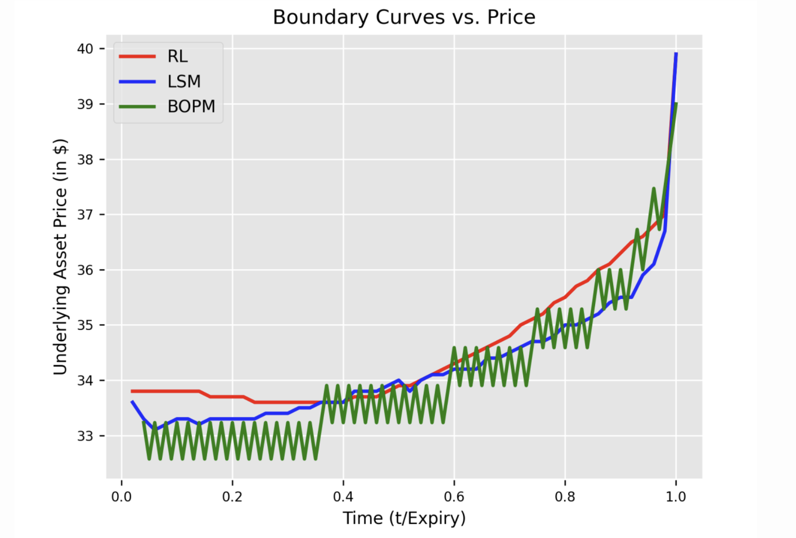
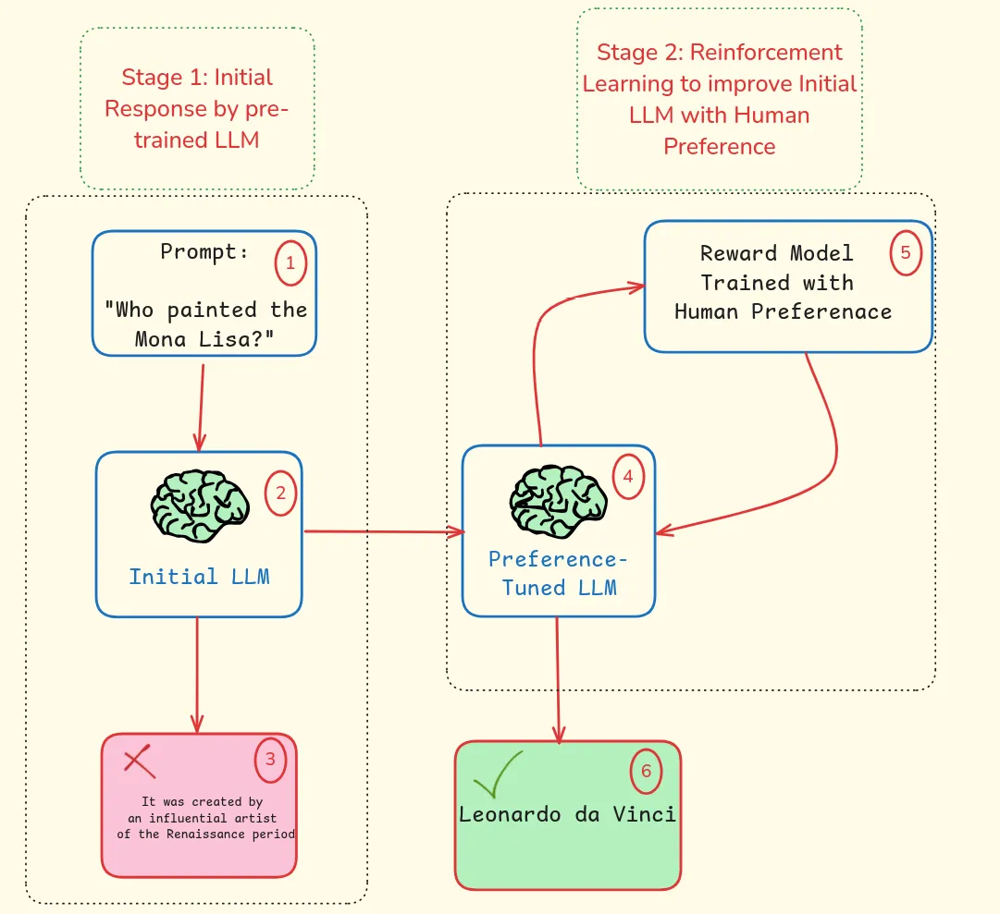
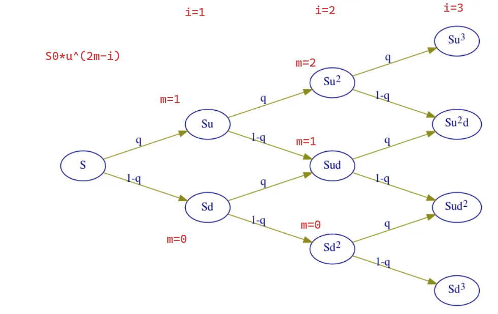
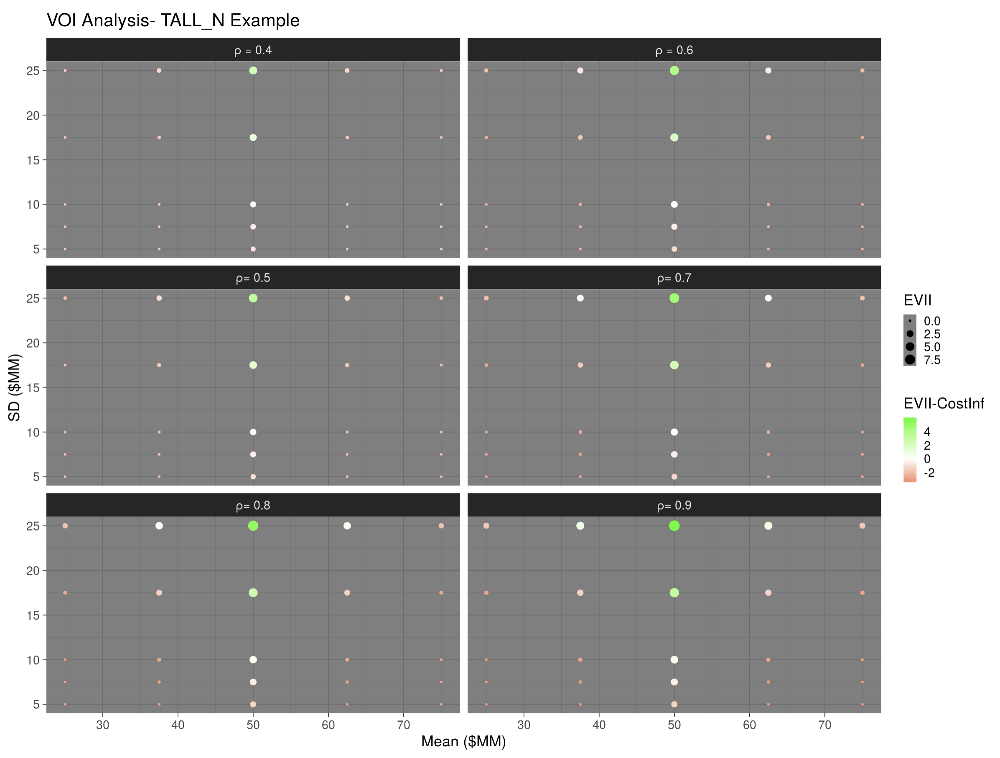
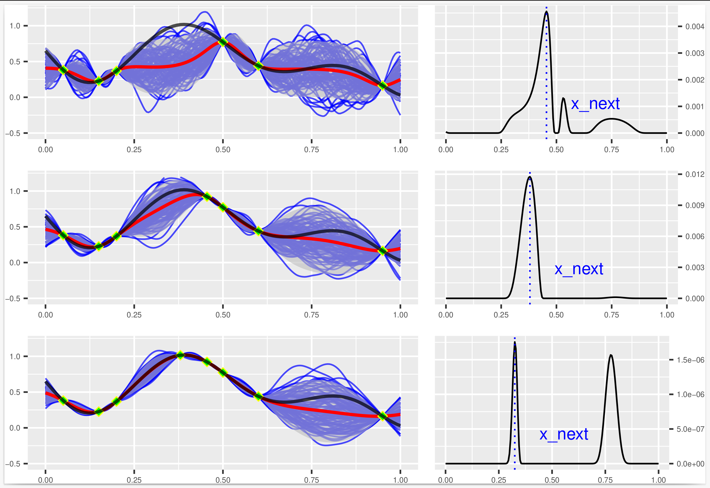
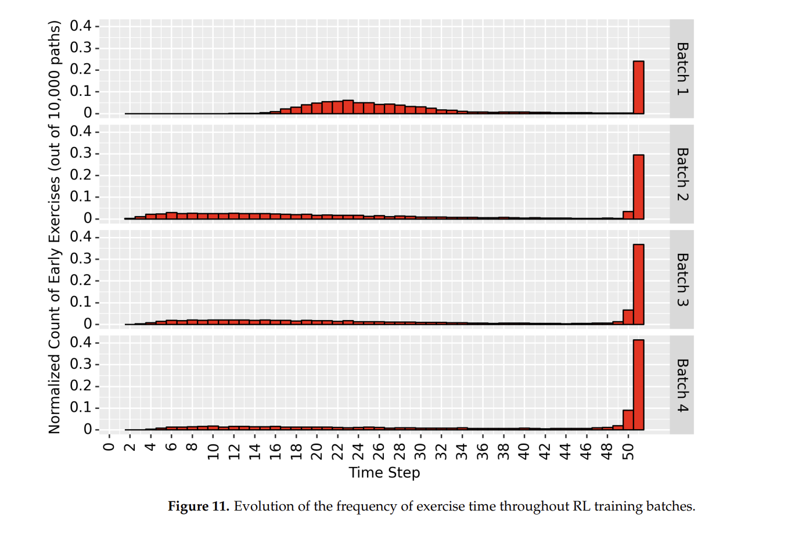

Data Science & AI Projects
Here you’ll find a collection of my work in machine learning, reinforcement learning, optimization, and decision analytics.
Mainly written in Python/R programming languages, and often under version control with Git/GitHub.
Featured Projects
Ameriopt Python package for American Option Pricing with Reinforcement Learning

GitHub: Repository
Article: Online
Here I developed a Python package for American option pricing using reinforcement learning. It is available on PyPI and GitHub. Is a simple and efficient way to price American options using reinforcement learning.


Inventory Optimization with Reinforcement Learning

GitHub: Repository
Article: Medium
Developed a reinforcement learning approach to optimize inventory management decisions. I implemented Q-Learning algorithm in Python to determine optimal ordering policies that minimize costs while maintaining service levels.


Dynamic Programming for Inventory Optimization
Article: TowardsAI
Implemented a dynamic programming solution for inventory management in less than 100 lines of Python code. The approach determines optimal inventory levels by balancing holding costs, stockout costs, and ordering costs.


Reinforcement Learning for LLM Alignment

GitHub: Repository
Article: AIMind
Here, I explored the application of Reinforcement Learning from Human Feedback (RLHF) for aligning Large Language Models with human preferences.


Binomial Option Pricing Model

Article: DataDrivenInvestor
Implemented a Python implementation of the Binomial Option Pricing Model for valuing American options. The implementation uses recursive techniques to efficiently calculate option prices at different time steps.


Probabilistic Reserve Estimate Dashboard (AKER BP)

Demo: VOI Analysis | Probabilistic Reserve Evaluation
Here, I developed a probabilistic reserve estimate dashboard tool using R Shiny/RStudio during my project with AKER BP (ShinyApps). The tool provides real-time data-driven insights for decision-making in energy asset valuation. It also allows users to analyze over 10,000 scenarios using Monte Carlo simulations, enabling improved risk assessment and data-driven decision-making.


Research & Academic Projects
Bayesian Optimization for Reservoir Engineering

GitHub: Repository
Applied Bayesian optimization techniques to optimize well placement and control in reservoir engineering. The approach efficiently explores the parameter space to maximize oil recovery while minimizing computational costs.


Reinforcement Learning for American Option Pricing

GitHub: Repository
Implemented a reinforcement learning approach to optimize American option pricing. The approach uses a deep neural network to approximate the optimal policy for pricing American options.


Data Science Articles & Tutorials
- Bridging the Gap: Integrating Data Science and Decision Science through Six Essential Questions
- Learn Reinforcement Learning from Human Feedback (RLHF): Your 9-Hour Study Plan
- Understanding Why There Is No Such Thing as ‘Correct Probability’ in Data Science
- Forgot Solutions in Life. It’s All About Trade-offs (Here Is How to Master Them)
- The Power of Negative Thinking: Supercharge your Decision-Making Skill